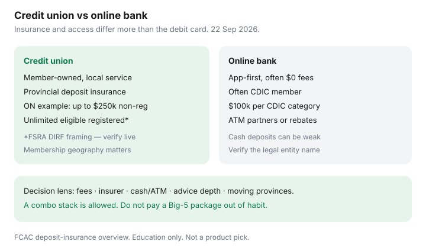

Personal Finance · Canada
Credit Unions vs Online Banks in Canada: Fees, Service, and Deposit Insurance Quirks
Canadians default to a Big-5 package because the branch is across from the grocery store, then quietly pay $15–$30 a month for a suite of services they could unbundle. Credit unions and national online banks are the two serious alternatives — and they are not the same product wearing different logos. Fees, advice, ATM geography, and especially who insures the deposit diverge. This page compares them in plain language for middle-aged households, with deposit-insurance quirks date-stamped against FCAC and provincial materials used 22 Sep 2026.
Digital habit-fit among EQ, Wealthsimple, and Tangerine is covered separately. Package exit without moving the mortgage is the 90-day timeline.
Disclosure: Education only. Not a recommendation to join a specific credit union or open a specific online bank. We do not currently claim partnerships with banks or credit unions. Affiliate offer types may appear later; none are invented here. Confirm live fees and your provincial deposit insurer before you move payroll.
Key takeaways
- Credit unions are member-owned and usually provincially regulated; online banks are often federal CDIC members with app-first service.
- Deposit insurance is the quiet difference: CDIC for many banks versus provincial plans for most credit unions and caisses populaires.
- Ontario’s FSRA DIRF describes $250,000 on non-registered deposits and unlimited coverage on eligible registered deposits at Ontario credit unions — different from CDIC’s familiar $100,000 categories.
- Branch access versus app-only is a lifestyle test, not a morality test. Cash deposits and complex mortgages still favour a counter.
- Pick with a side-by-side table: fees, insurance, ATM/cash, advice, and product depth — then keep a deliberate combo if needed.
Fee and service trade-offs in plain language
Online banks (Simplii, Tangerine, EQ Bank, and peers) compete on $0 monthly fees, clear Interac pricing, and ATM strategies (network partners or rebates). Service is chat, phone, and help articles. Credit unions vary widely: some match no-fee everyday accounts; others still use package tiers, but throw in in-person mortgage brokers, agricultural or small-business knowledge, and member patronage refunds. A labelled $16.95 Big-5 package is $203.40 a year before you count overdraft — the number that should force a comparison, not a loyalty story.
Service quality is local. A strong credit union mortgage desk can beat a national call centre when your file is messy. A weak credit union app can waste an evening that Tangerine would have finished in four taps. Test the app and ask about draft/certified-cheque lead times before you move the household float.

Provincial deposit insurance vs CDIC
FCAC’s deposit-insurance overview is blunt: CDIC covers eligible deposits at CDIC member institutions. Provincially regulated credit unions, caisses populaires, and some trust companies use provincial deposit insurers instead. Examples FCAC lists include Alberta’s Credit Union Deposit Guarantee Corporation, British Columbia’s CUDIC, Ontario’s coverage administered through FSRA, Québec’s Autorité des marchés financiers, and parallel corporations in other provinces.
Ontario detail from FSRA’s credit-union deposit insurance page (used 22 Sep 2026): non-registered insurable deposits covered up to $250,000 (principal and interest) per depositor per Ontario credit union or caisse populaire; eligible registered deposits (such as RRSPs and TFSAs held at the credit union) described as having unlimited coverage. Branches of the same credit union are not separately insured. CDIC’s headline figure remains $100,000 per insured category per member institution — joint and registered categories can multiply coverage at banks, but the rulebook is CDIC’s, not FSRA’s.
Neither system is “fake insurance.” They are different legal backstops. Read which one applies to the exact legal name on your statement. Fintech apps that are not banks may use CDIC trust structures at partner banks — that is a third pattern, covered on the Wealthsimple everyday checklist.
Branch access vs app-only realities
- Cash deposits: credit-union teller or partner ATM usually wins over pure rebate apps.
- Complex mortgages / HELOCs: local adjudication can help; national online players may refer you out or keep a thinner product set.
- Travel and FX: some online brands advertise stronger FX; credit-union card networks vary — compare the card, not the institution slogan.
- Hours: a credit union that closes at 4 p.m. is a real constraint for shift workers; 24/7 chat is the online-bank answer.
- Membership: credit unions require eligibility (geography, employment, association). Online banks usually need Canadian residency and identification.
When a credit union fits middle-aged households
Choose a credit union path when you value a named advisor for a renewal, when your community still runs on in-person drafts, when provincial registered-deposit coverage terms are attractive for large TFSA/RRSP cash held at the institution, or when patronage and local lending are part of how you already bank. Middle-aged households with a mortgage, a HELOC discussion, and kids’ accounts often prefer one relationship that can see the whole file. Verify deposit insurance on the provincial regulator’s page, not a flyer.
When a national online bank wins
Choose online when monthly fees are the enemy, when you already live in an app, when you move provinces and do not want membership geography problems, and when CDIC membership plus a simple product set matches your needs. Pair with a deliberate cash-deposit workaround if you still handle cash. Use the 14-day switch so PADs survive.
A side-by-side decision table
| Lens | Credit union (typical) | Online bank (typical) |
|---|---|---|
| Monthly fees | Varies — ask for no-fee everyday options | Often $0 by design |
| Deposit insurance | Provincial plan (e.g. FSRA DIRF, CUDIC, AMF) | Often CDIC member — verify the legal name |
| Branches | Local network; membership area matters | App/phone; ATM partners or rebates |
| Advice depth | Often stronger for mortgages and local credit | Self-serve; escalations by phone/chat |
| Moving provinces | May need a new membership | Usually simpler digitally |
| Best as | Relationship + local service hub | Everyday spending and fee escape |
Sources & date stamps
- FCAC, Deposit insurance — CDIC vs provincial insurers list (used 22 Sep 2026).
- FSRA, Credit Unions and Deposit Insurance — $250,000 non-registered; unlimited eligible registered (used 22 Sep 2026).
- CDIC, What’s covered — $100,000 per category framing (used 22 Sep 2026).
- Package fee labelled math carried from the Big-5 exit guide ($16.95 × 12 = $203.40).
Frequently asked questions
Are credit union deposits covered by CDIC?
Usually not for provincially regulated credit unions. FCAC points households to provincial deposit insurers — for example FSRA’s Deposit Insurance Reserve Fund in Ontario, CUDIC in British Columbia, and provincial guarantee corporations elsewhere. CDIC covers eligible deposits at CDIC member institutions such as many banks and some federal members.
Is Ontario credit union coverage higher than CDIC?
FSRA materials describe non-registered insurable deposits at Ontario credit unions covered up to $250,000 per depositor per credit union, with unlimited coverage for eligible registered deposits such as TFSAs and RRSPs held at the credit union. Confirm on FSRA’s current page — rules are provincial, not a national slogan.
When does an online bank win?
When you want national ATM or digital access without membership geography, a posted no-fee stack, and CDIC membership you can look up on CDIC’s search tool. Online banks trade branch advice for app speed. Run fees, Interac limits, and cash-deposit needs before you switch.
When does a credit union fit a middle-aged household?
When local branch service, member patronage, mortgage or HELOC relationships, and provincial deposit insurance terms matter more than a national digital brand. Membership rules and service areas still apply — you generally join a specific credit union, not a generic national app.
Should I keep accounts at both?
Often yes: credit union for mortgage and local service, online bank for everyday no-fee spending, or the reverse. CDIC and provincial insurers do not replace the need to understand which legal entity holds each dollar.